MetaDrive Mixed Traffic
Dense mixed-road driving is shown as the primary large-scale demonstration. Videos play at 1.5x speed.
A Decoder-Free Latent-Interaction Dreamer
with Action-Residual Chains for Autonomous Driving
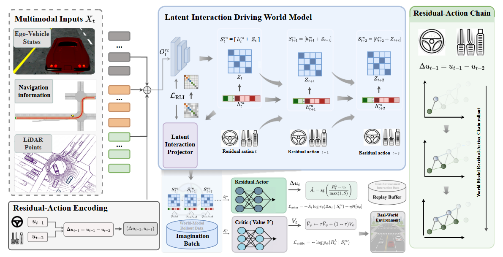
Problem Motivation
Closed-loop driving should not be treated as repeatedly choosing unrelated absolute actions. Real steering and longitudinal commands evolve through small, coherent updates around the previous control command. This observation motivates LIDAR-AD's residual-action formulation and action-residual-chain modeling.
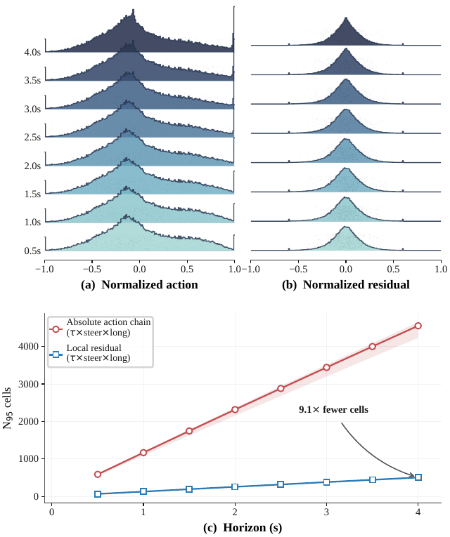
Dense mixed-road driving is shown as the primary large-scale demonstration. Videos play at 1.5x speed.
Closed-loop negotiation around unseen roundabout layouts.
Decision making through intersection conflict regions.
Front-view rendering on nuPlan-style urban scenarios.
Bird's-eye-view rendering synchronized with the nuPlan cases.
Autonomous driving requires long-horizon closed-loop decision making in highly dynamic traffic environments. Latent world models offer an effective framework for this problem by enabling imagination-based decision making in compact latent spaces. However, multi-source driving observations contain substantial control-irrelevant redundancy, while reliable decisions depend on risk-relevant relations and future dynamics. Moreover, vehicle control evolves continuously and incrementally, requiring the model to capture action adjustments and their multi-step effects. Existing methods still rely on observation reconstruction and absolute action modeling, which may emphasize task-irrelevant details and weaken risk-aware representation learning and continuous-control modeling.
We propose LIDAR-AD, a decoder-free Latent-Interaction Dreamer with Action-Residual Chains for autonomous driving. Instead of reconstructing observations, LIDAR-AD learns compact latent representations through redundancy-reduced alignment, enabling the model to focus on risk-relevant relations in multi-source driving inputs. To better capture the continuous and incremental nature of vehicle control, LIDAR-AD formulates policy outputs as residual action updates and introduces residual-action chain contrastive learning to extract temporal dependencies from residual-action sequences for multi-step continuous decision making. These designs jointly improve risk-aware state abstraction, continuous control modeling, and long-horizon dynamics prediction.
Extensive experiments across diverse simulated driving scenarios demonstrate that LIDAR-AD consistently outperforms strong world-model baselines, achieving the highest reward and the best success rate among learning-based methods. Evaluations on the nuPlan benchmark further demonstrate its effectiveness on real-world driving data.

DLIR removes dense observation reconstruction and instead encodes ego state, LiDAR-like range sensing, navigation context, and a deterministic risk descriptor into a compact interaction-aware embedding. Gated pairwise interactions and redundancy reduction guide the RSSM posterior toward risk-relevant structure.
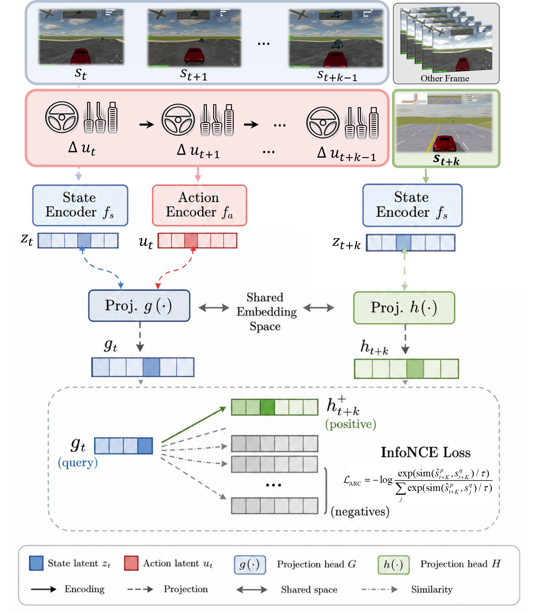
RAWM models vehicle control as incremental evolution in pre-tanh action space. The actor predicts a residual update around the previous command, and the transition model conditions on both the executed action and residual adjustment, introducing a smooth-control prior for long-horizon driving.
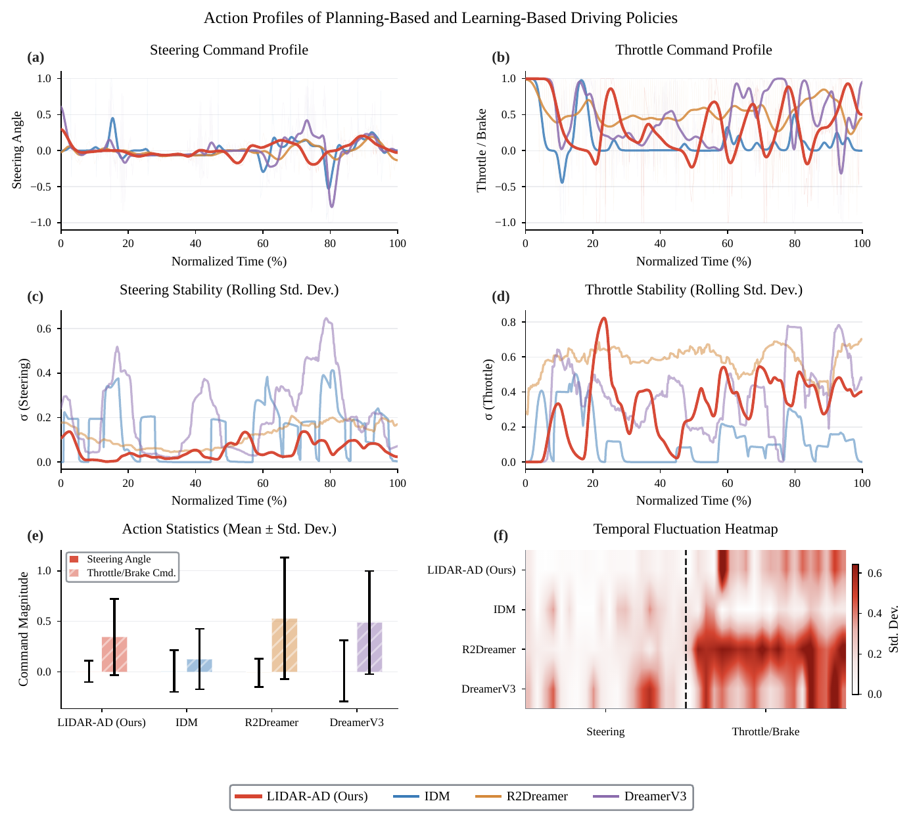
ARC-CL forms short chains of residual-action embeddings and aligns the K-step prior rollout with the true future posterior state. This contrastive objective strengthens the world model's ability to distinguish action sequences that lead to different future driving states.
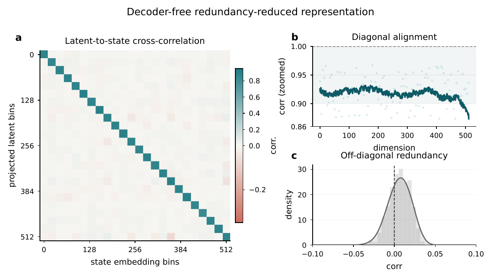
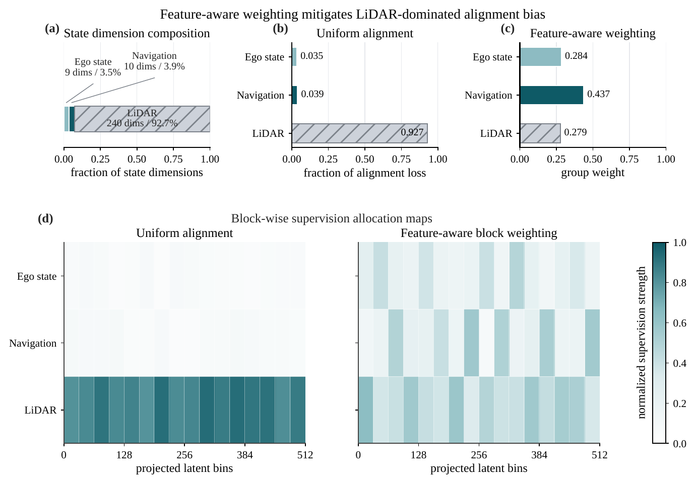
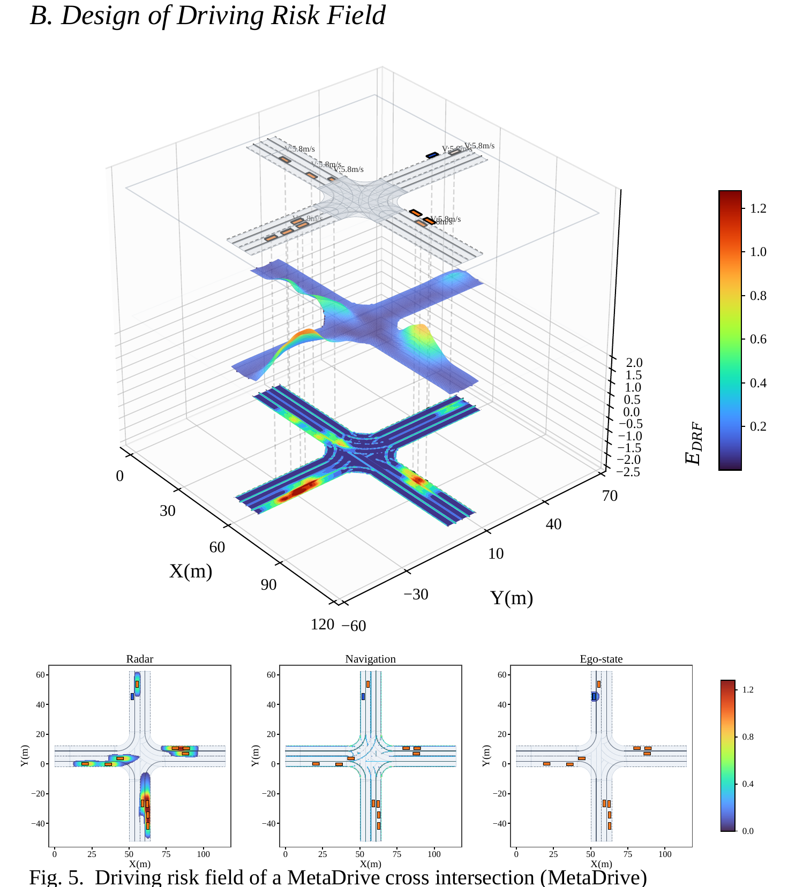
Dynamic risk-field evolution synchronized with safety-relevant driving context.
Across mixed scene, roundabout, T-intersection, and nuPlan benchmarks, LIDAR-AD achieves the highest reward in all scenarios and the highest average success rate among learning-based methods.
Best learning-based mean success across four benchmarks.
Highest reward with 94.80% success.
Strongest reward and success among all methods.
Highest reward and fastest learned policy speed.
| Method | Mixed Scene | Roundabout | T-Intersection | nuPlan | ||||||||
|---|---|---|---|---|---|---|---|---|---|---|---|---|
| Reward | Success (%) | Speed | Reward | Success (%) | Speed | Reward | Success (%) | Speed | Reward | Success (%) | Speed | |
| IDM | -259.01 ± 0.00 | 49.42 ± 0.00 | 24.22 ± 0.00 | -245.00 ± 6.00 | 10.77 ± 0.25 | 24.62 ± 0.45 | -276.00 ± 8.00 | 20.67 ± 0.45 | 23.32 ± 0.55 | 122.41 ± 10.44 | 99.07 ± 1.42 | 23.95 ± 0.88 |
| SAC | 420.99 ± 43.93 | 27.20 ± 9.17 | 31.46 ± 1.20 | 454.99 ± 36.14 | 73.40 ± 6.75 | 31.26 ± 0.94 | 384.99 ± 41.09 | 79.40 ± 8.74 | 29.86 ± 1.09 | 194.69 ± 12.28 | 84.33 ± 1.67 | 29.76 ± 1.04 |
| PPO | 136.42 ± 10.35 | 6.26 ± 3.12 | 43.96 ± 1.89 | 151.42 ± 8.51 | 18.66 ± 2.30 | 43.46 ± 1.47 | 120.42 ± 9.68 | 14.16 ± 2.97 | 41.76 ± 1.72 | 146.23 ± 38.15 | 85.00 ± 5.40 | 26.51 ± 6.41 |
| DreamerV3 | 802.48 ± 109.65 | 85.75 ± 4.68 | 23.39 ± 5.64 | 836.48 ± 85.05 | 85.64 ± 0.83 | 24.29 ± 4.15 | 768.48 ± 96.69 | 81.64 ± 1.07 | 22.39 ± 4.84 | 207.30 ± 8.20 | 87.30 ± 6.40 | 26.29 ± 3.29 |
| R2Dreamer | 861.14 ± 66.20 | 90.38 ± 5.37 | 25.22 ± 1.73 | 895.14 ± 51.35 | 91.78 ± 3.73 | 25.82 ± 1.27 | 827.14 ± 58.38 | 88.18 ± 4.82 | 24.12 ± 1.48 | 233.24 ± 12.28 | 91.27 ± 1.67 | 30.16 ± 1.04 |
| LIDAR-AD (Ours) | 936.41 ± 21.04 | 94.80 ± 3.90 | 30.02 ± 0.23 | 967.41 ± 17.31 | 94.46 ± 2.26 | 30.27 ± 0.18 | 919.41 ± 19.68 | 92.36 ± 2.93 | 29.47 ± 0.21 | 259.74 ± 9.21 | 97.60 ± 3.20 | 31.26 ± 0.78 |
Values are mean ± standard deviation. Bold marks the best reward and success result in each scenario group.
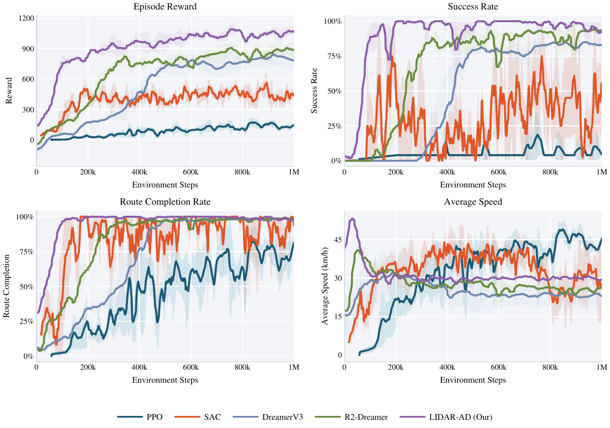
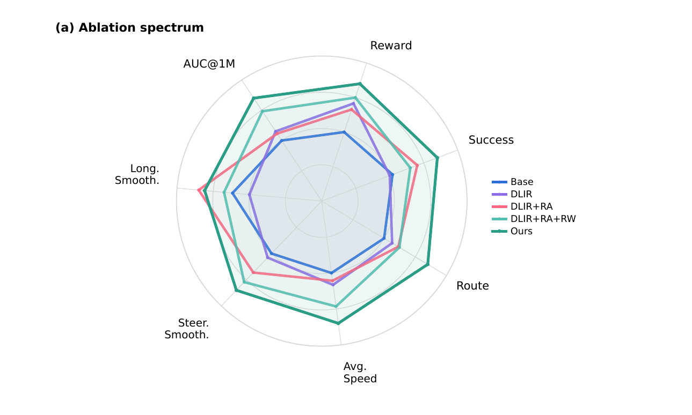
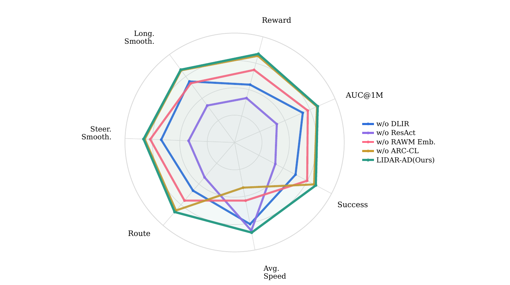
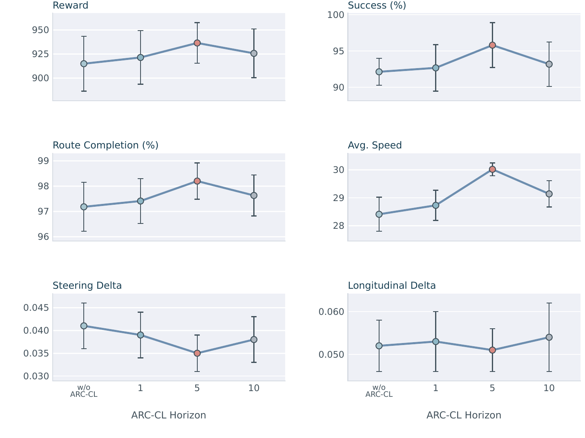
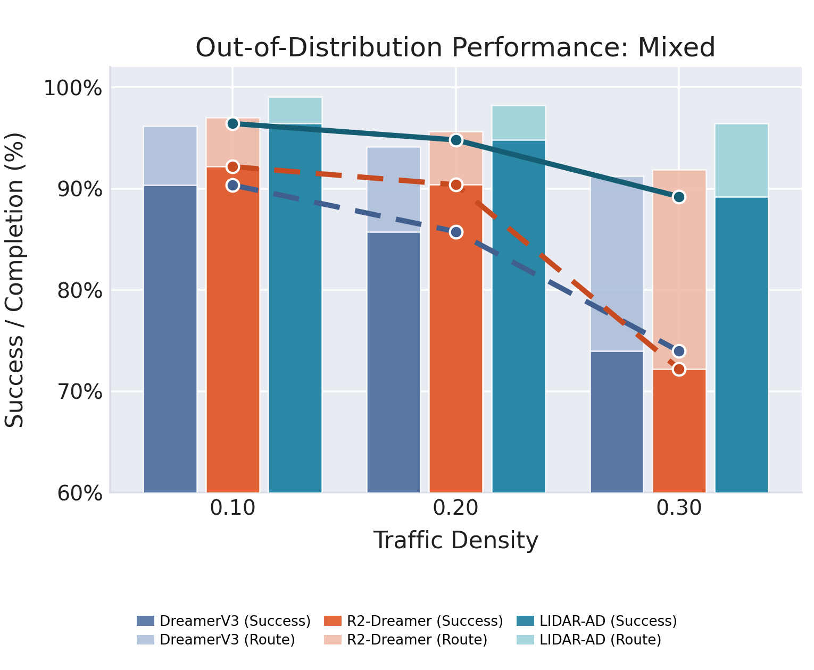
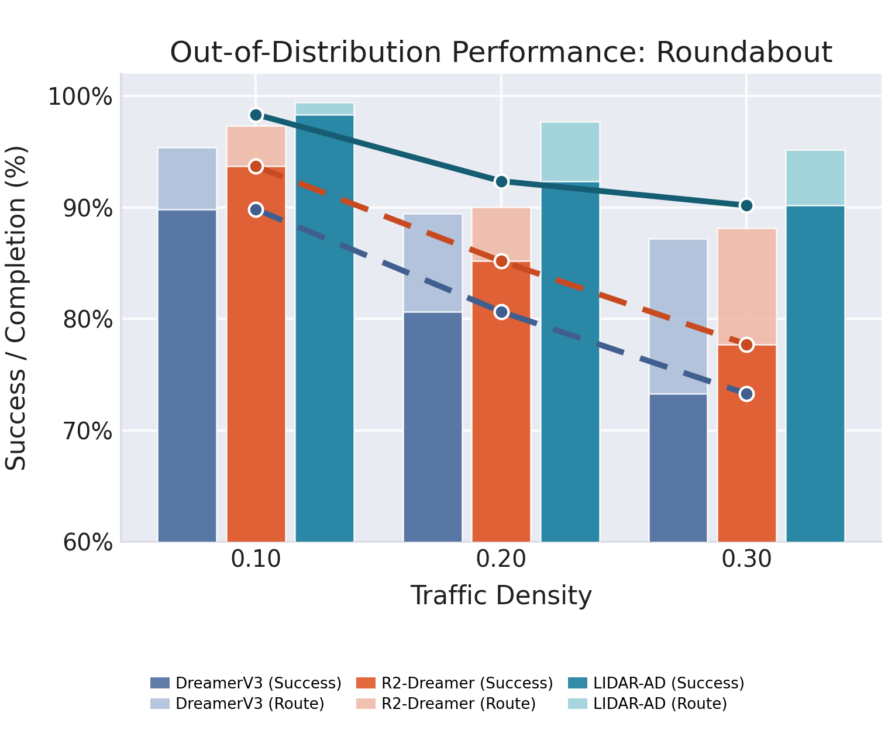
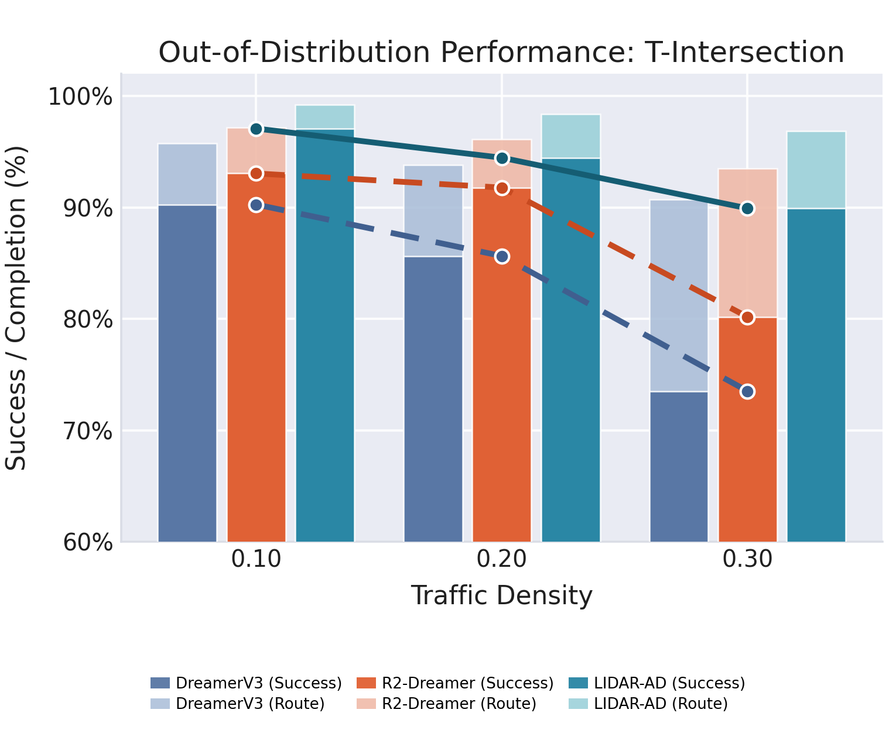
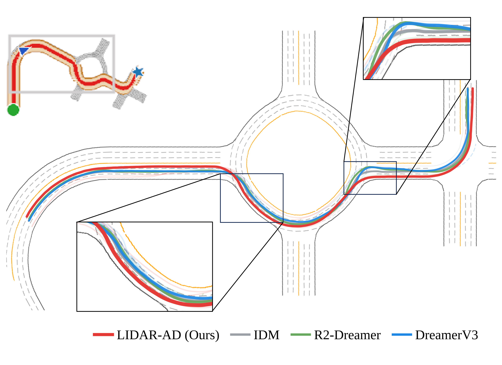
The manuscript link will be released after public posting.
Implementation and reproducibility scripts will be made available.
Scenario configuration and processed benchmark data will be released.
Trained model checkpoints will be provided with the code release.
@article{liu2026lidarad,
title={LIDAR-AD: A Decoder-Free Latent-Interaction Dreamer with Action-Residual Chains for Autonomous Driving},
author={Liu, Yongzhi and Yang, Xiao and Kang, Zeng and Zhang, Sunan and Zhuang, Weichao},
journal={Under Review},
year={2026}
}